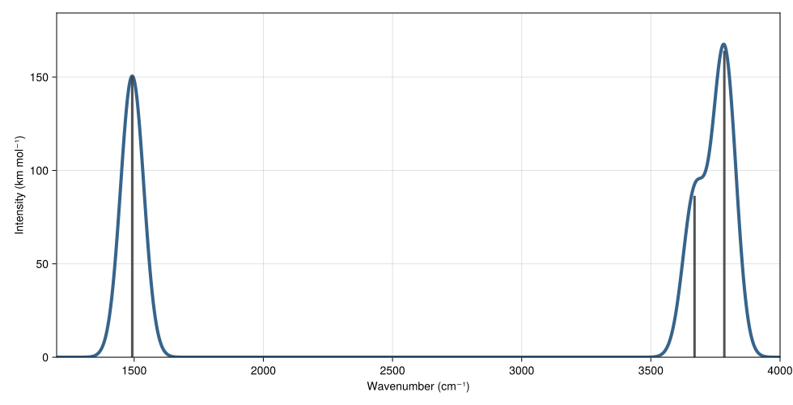

Quickstart
This page covers the three main workflows in 0.4.0:
- restart input plus Hessian and moldescriptor
- XYZ input plus Hessian
- writing results and normal modes
The examples below use the package test fixtures so the numbers are reproducible.
Restart input with intensities
using VibrationalAnalysis
data = joinpath(pkgdir(VibrationalAnalysis), "test", "data")
structure = joinpath(data, "test_h2o.rst")
hessian_file = joinpath(data, "test_hessian_h2o.dat")
moldescriptor = joinpath(data, "test_moldescriptor.dat")
atom_names, atom_masses, atom_coords, atom_types = read_structure(structure)
hessian = read_hessian(hessian_file)
atom_charges = read_moldescriptor(moldescriptor, atom_names, atom_types)
wavenumbers, intensities, force_constants, reduced_masses, modes =
calculate(atom_masses, atom_coords, atom_charges, hessian)
(
round.(wavenumbers[7:end], digits = 3),
round.(intensities[7:end], digits = 3),
)([1492.535, 3669.024, 3784.327], [150.521, 86.433, 164.086])For nonlinear molecules such as water, the first six entries correspond to rigid-body translation and rotation. The vibrational modes start at index 7.
Plotting the vibrational spectrum
The example below turns the H₂O fixture calculation into a simple spectrum plot. The gray sticks are the discrete line intensities, and the blue curve applies a Gaussian broadening with sigma = 45 cm^-1.
using CairoMakie
using VibrationalAnalysis
function broaden_spectrum(wavenumbers, intensities; sigma = 45.0, points = 1800)
x_min = floor(Int, minimum(wavenumbers) / 100) * 100 - 200
x_max = ceil(Int, maximum(wavenumbers) / 100) * 100 + 200
x_grid = collect(range(x_min, x_max, length = points))
broadened = [
sum(intensity * exp(-0.5 * ((x - wavenumber) / sigma)^2) for (wavenumber, intensity) in zip(wavenumbers, intensities))
for x in x_grid
]
return x_grid, broadened
end
data = joinpath(pkgdir(VibrationalAnalysis), "test", "data")
structure = joinpath(data, "test_h2o.rst")
hessian_file = joinpath(data, "test_hessian_h2o.dat")
moldescriptor = joinpath(data, "test_moldescriptor.dat")
atom_names, atom_masses, atom_coords, atom_types = read_structure(structure)
hessian = read_hessian(hessian_file)
atom_charges = read_moldescriptor(moldescriptor, atom_names, atom_types)
wavenumbers, intensities, force_constants, reduced_masses, modes =
calculate(atom_masses, atom_coords, atom_charges, hessian)
vib_wavenumbers = wavenumbers[7:end]
vib_intensities = intensities[7:end]
x_grid, broadened = broaden_spectrum(vib_wavenumbers, vib_intensities, sigma = 45.0)
y_max = 1.1 * max(maximum(vib_intensities), maximum(broadened))
fig = Figure(size = (980, 500))
ax = Axis(
fig[1, 1],
xlabel = "Wavenumber (cm⁻¹)",
ylabel = "Intensity (km mol⁻¹)",
xticks = 1500:500:4000,
yticks = 0:50:150,
)
stick_segments = Point2f[]
for (wavenumber, intensity) in zip(vib_wavenumbers, vib_intensities)
push!(stick_segments, Point2f(wavenumber, 0.0))
push!(stick_segments, Point2f(wavenumber, intensity))
end
lines!(ax, x_grid, broadened, color = :steelblue4, linewidth = 4)
linesegments!(ax, stick_segments, color = (:gray25, 0.9), linewidth = 3)
xlims!(ax, minimum(x_grid), maximum(x_grid))
ylims!(ax, 0.0, y_max)
save("h2o-spectrum.svg", fig)
nothing
XYZ input without intensities
using VibrationalAnalysis
data = joinpath(pkgdir(VibrationalAnalysis), "test", "data")
structure = joinpath(data, "test_h2o.xyz")
hessian_file = joinpath(data, "test_hessian_h2o.dat")
atom_names, atom_masses, atom_coords, atom_types = read_structure(structure)
hessian = read_hessian(hessian_file)
wavenumbers, force_constants, reduced_masses, modes =
calculate(atom_masses, atom_coords, hessian)
(
atom_types,
round.(wavenumbers[7:end], digits = 3),
)([1, 1, 1], [1492.535, 3669.024, 3784.327])For XYZ input, read_structure(...) assigns atom_types = ones(Int, n_atoms) because XYZ files do not encode molecule-type assignments.
Writing tabulated output
using VibrationalAnalysis
data = joinpath(pkgdir(VibrationalAnalysis), "test", "data")
structure = joinpath(data, "test_h2o.rst")
hessian_file = joinpath(data, "test_hessian_h2o.dat")
atom_names, atom_masses, atom_coords, atom_types = read_structure(structure)
hessian = read_hessian(hessian_file)
wavenumbers, force_constants, reduced_masses, modes =
calculate(atom_masses, atom_coords, hessian)
temp = mktempdir()
outfile = joinpath(temp, "wavenumbers.dat")
write_calculate_output(wavenumbers, force_constants, reduced_masses, filename = outfile)
readlines(outfile)[1:4]4-element Vector{String}:
"# Wavenumbers (cm-1) Force constants (mdyn Å-1) Reduced masses (amu)"
"-4.99928168e+01\t1.57494693e-03\t1.06952346e+00"
"-4.19676644e+01\t1.07893207e-03\t1.03969059e+00"
"-3.68818128e+01\t8.44831525e-04\t1.05410823e+00"Writing normal modes
Use matrix output when another program will consume the eigenvectors:
write_modes(modes, filename = "normal_modes.dat")Use XYZ trajectories when you want animated mode displacements:
write_modes(modes, atom_coords, atom_names, filename = "modes")This creates files such as modes-1.xyz, modes-2.xyz, and so on.